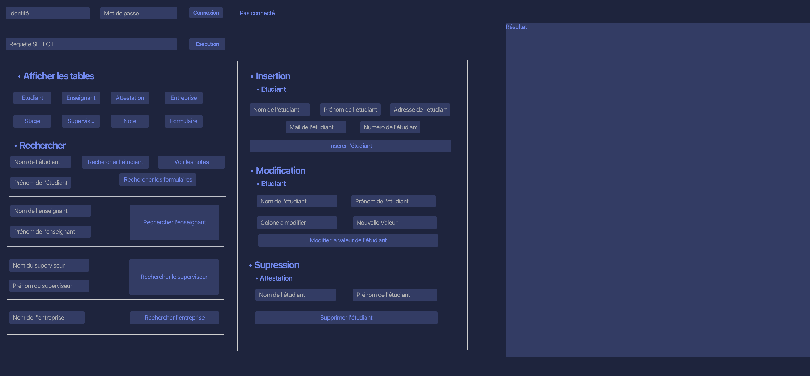

Compétences
Humaines
Dynamique
Rigoureuse
Esprit d'équipe
Curieuse
Techniques
Java
SQL
Python
PHP
JavaScript
HTML
CSS
C
SQL Server
MySQL
MongoDB
Git
Figma
Parcours
Aujourd'hui
Préparation d'un BUT informatique
IUT - Laval
Formation alliant matières informatiques (programmation, base de données) et matières générales (droit, gestion, communication).
2023
Baccalauréat général
Lycée Chateaubriand - Rennes
Spécialités SVT et physique (option maths complémentaires).
2022
Stage d'observation chez Artefacto
Betton
Artefacto est une entreprise spécialisée dans la réalité augmentée et réalité virtuelle.
2019
Stage d'observation chez Worldline
Rennes
Worldline est une entreprise spécialisée dans le développement de solutions de paiement en ligne.
Projets
Jeu de morpion
Java, JavaFX
Ce jeu de morpion est une application desktop en Java et JavaFX avec architecture MVC. Deux joueurs peuvent s'affronter en personnalisant leurs noms et symboles, via une interface soignée et intuitive.

LFJ site vitrine
HTML, CSS
La ferme de Jean est un site vitrine de vente directe. Il présente l’activité de la ferme, ses produits, ainsi que des informations pratiques, avec un design soigné et responsive.
Site de gestion d'un BDE
PHP, JavaScript, SQL
Application web complète de gestion d'un Bureau Des Étudiants, déployée sur serveur. Elle permet l'inscription aux événements et l'achat d'articles, avec un panel administrateur pour gérer le contenu et les rôles.
Burk!
Figma
Burk! et Burk! Delivery sont deux applications mobiles de comande, personnalisation et livraison de burgers. Il s'agit de prototypes entièrement fonctionnels.
BDD gestion des stages
SQL, SQL Server, JavaFX
Conception, implémentation et explotation d'une base de données de gestion des stages des étudiants d'un établissement, avec une interface graphique simple.

Réalisation d'un cahier des charges
IEEE 830-1993
Projet de recueil et d'analyse des besoins client afin de rédiger un cahier des charges complet (objectifs, fonctionnalités, cas d'utilisation, spécifications fonctionnelles, plan d'action...).